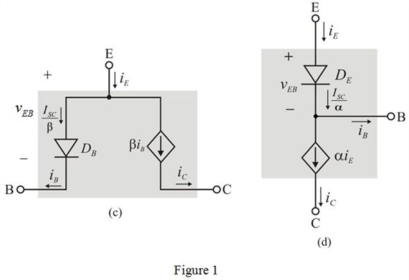

Refer to Figure 6.5 for four possible large-signal equivalent circuit models of the npn BJT operating in the forward active mode in the text book.
Refer to Figure 6.11 for two possible large-signal equivalent circuit models of the pnp BJT operating in the active mode in the text book.
The current-voltage relationship of the pnp transistor is identical to the npn transistor except that has to be replaced by.
has to be replaced by.
Draw the remaining two large-signal models of a  transistor in the active mode.
transistor in the active mode.

Thus, the remaining two large-signal models of a  transistor in the active mode are drawn as shown in Figure 1.
transistor in the active mode are drawn as shown in Figure 1.